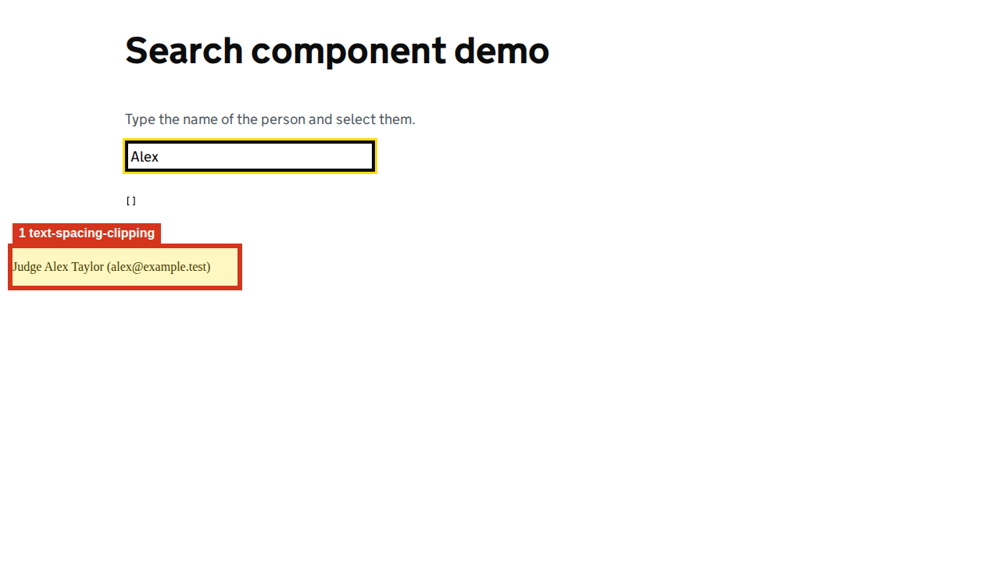

Show highlighted page image

1. text-spacing-clipping
Text becomes clipped by overflow:hidden/clip after WCAG 1.4.12 spacing overrides (layout heuristic; confirm visually).
Selector: #mat-option-0 > span:nth-of-type(1)
Developer advice
Layout heuristic — inspect the changed spacing
Where to look
- Page
- http://localhost:4200/coverage/searches?feature=person&domain=judicial&exclude=true
- Selector
#mat-option-0 > span:nth-of-type(1)- Element
span
- Why this matters
- Overlapping or clipped text can hide content when users increase text spacing.
- What to fix
- Allow the container to grow or wrap text. Recheck with line height 1.5, paragraph spacing 2em, letter spacing 0.12em and word spacing 0.16em. The highlighted screenshot shows the restored layout.
- How to verify
- Apply line height 1.5 times font size, paragraph spacing 2 times font size, letter spacing 0.12em and word spacing 0.16em. Inspect the highlighted element and neighbouring content; confirm all text and controls remain readable and operable.
- Guidance
- W3C: understanding text spacing
- Related WCAG criteria
- Related: 1.4.12 (AA, added in WCAG 2.1). Confirm actual loss of content or functionality. Criteria refer to WCAG 2.2; unless noted, they also existed in WCAG 2.0.
DOM hints and source investigation
search selector #mat-option-0 > span:nth-of-type(1)
These are rendered DOM clues, not a verified source-file mapping. Match the selector and nearby text in the route component/template. The excerpt may be truncated.
{
"tag": "span"
}Captured DOM excerpt
<span class="mat-option-text"> Judge Alex Taylor (alex@example.test) </span>